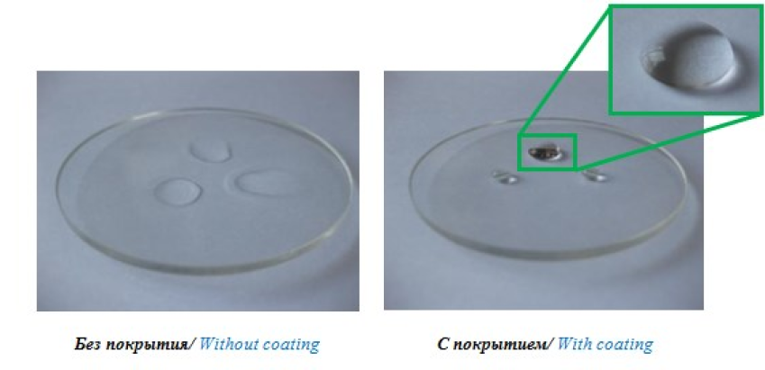

Подробнее
ПРОСВЕТЛЯЮЩИЕ ЗОЛЬ-ГЕЛЬ ПОКРЫТИЯ НА ОСНОВЕ SiO2 С ГИДРОФОБНЫМИ СВОЙСТВАМИ
Разаботаны защитные силикатные покрытия. Получаемая защитная плёнка прозрачная в видимом диапазоне, обладает гидрофобными свойствами, хорошо защищает металлические поверхности от внешнего воздействия окружающей среды, обладает высокой антикоррозионной стойкостью. Возможно введение в золь различных солей металлов (Mn, Co, Fe, Ag, Cu, Ni, Ce, Eu и др.) для получения окрашенных защитных антикоррозионных покрытий.
Область применения
Для защиты металлических, стеклянных и других типов поверхностей.

Область применения
Золь наносится на материал методами окунания, распыления или центрифугирования;
Однородное прозрачное покрытие формируется после термообработки при температуре 200-750 °С;
Хорошая адгезия к поверхности стали, алюминия, магния и др. металлов;
Механическая устойчивость к температурным колебаниям;
Гибкость процесса и управляемость
Гибкость процесса и Обладает термической стойкостью (до Т = 750 °С);
Устойчиво к агрессивным средам (высокая влажность, щелочь, кислота);
Хорошая адгезия к поверхности стали, алюминия, магния и др. металлов;
Покрытие гомогенно по составу и толщине;
Толщина покрытия 0,5 -3 мкм.
Технические характеристики
Предлагаются: изготовление опытных образцов, совместная разработка технической и технологической документации и оказание технической помощи по внедрению.